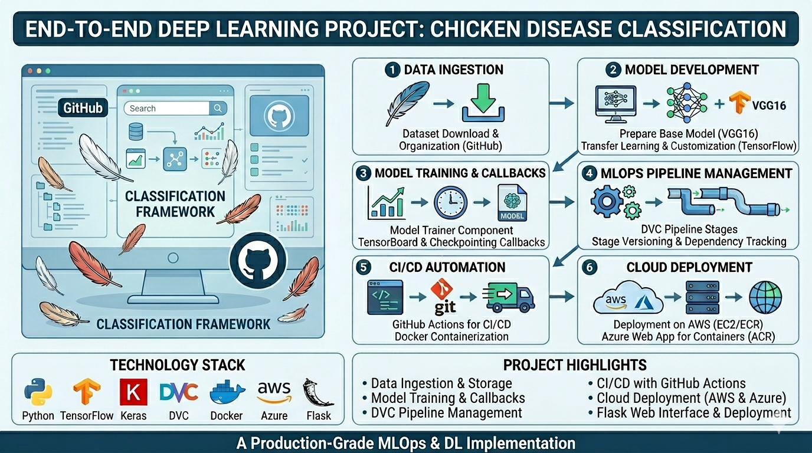
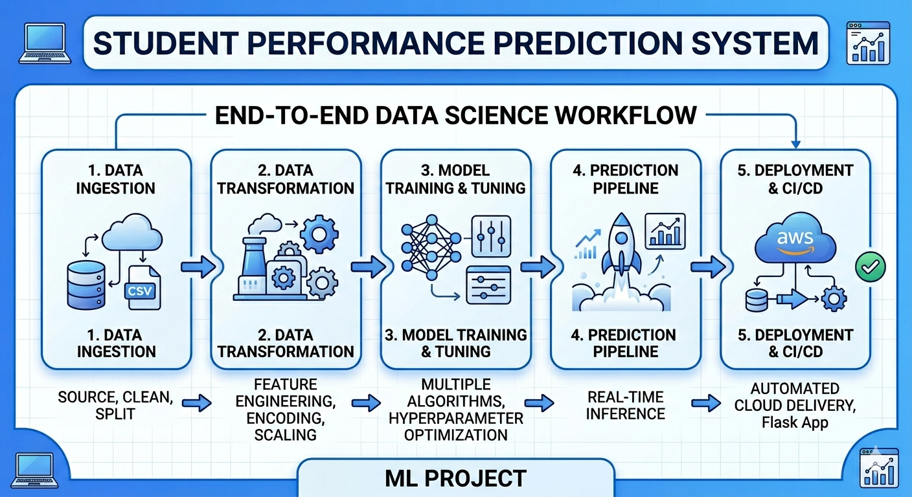
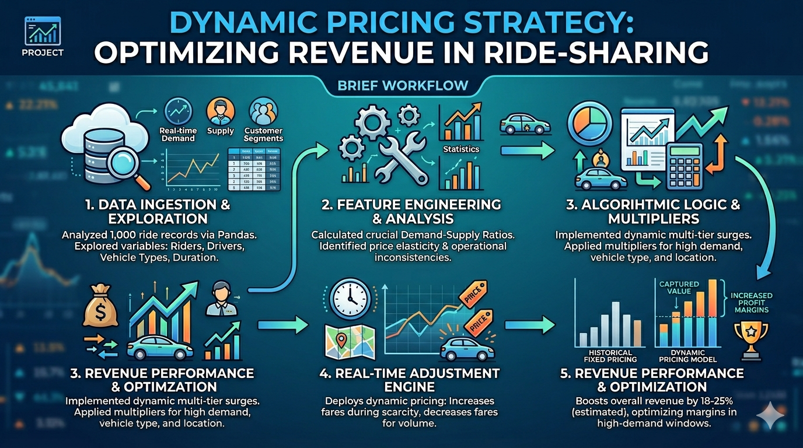
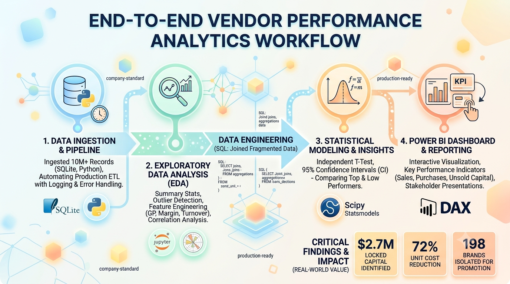
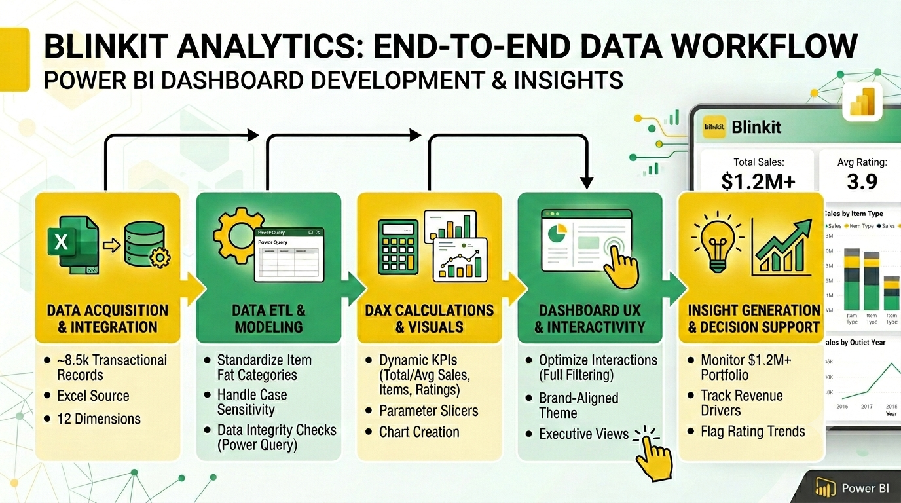

January 2025
Image Classification with MLOps
End-to-End ML Pipeline Architecture: Engineered a modular, production-grade Deep Learning pipeline using TensorFlow/Keras and VGG16 Transfer Learning to automate chicken disease classification from image data, integrating custom loggers and robust exception handling.
MLOps & Pipeline Reproducibility: Integrated DVC (Data Version Control) to manage and cache a 4-stage pipeline (Ingestion, Base Model, Training, Evaluation), eliminating compute redundancy by skipping unchanged steps and strictly tracking model parameter changes.
CI/CD & Cloud Deployment: Developed a Flask web application containerized with Docker, automating continuous integration and deployment (CI/CD) via GitHub Actions onto both AWS (EC2/ECR) and Azure Web App for Containers.

January 2024
Student Performance Predictor

End-to-End ML Pipeline Architecture: Engineered a modular, production-grade Machine Learning pipeline using Object-Oriented Programming (OOP) in Python to predict student performance metrics, utilizing custom logging and context-aware exception handling to ensure enterprise-level code reliability and zero-downtime debugging.
Advanced Data Engineering & Optimization: Developed a robust automated preprocessing pipeline using Scikit-Learn’s ColumnTransformer to handle imputation and feature scaling, implementing cross-validated hyperparameter tuning via GridSearchCV across a suite of algorithms (including XGBoost and CatBoost) to dynamically select and serialize the highest-performing model based on R Squared score.
Cloud Deployment & CI/CD Automation: Built and served a real-time inference pipeline integrated with a custom Flask web application, automating cloud deployment on AWS Elastic Beanstalk via an AWS CodePipeline continuous integration (CI/CD) workflow triggered directly by GitHub version control.
December 2023
Dynamic Pricing Strategy

Developed an end-to-end Dynamic Pricing System using a Random Forest Regressor that analyzed real-time supply-demand gaps, location types, and temporal features to optimize ride costs, outperforming baseline Decision Tree models.
Engineered a robust data preprocessing pipeline incorporating IQR outlier detection and One-Hot Encoding to clean high-variance datasets, significantly reducing model noise and ensuring stable pricing predictions on unseen data.
Evaluated model performance using MSE and R Squared metrics, generating actionable predictive insights and data visualizations (Actual vs. Predicted) to demonstrate scalable business value and potential revenue optimization.
September 2025
Vendor Performance Analysis

Data Engineering & Optimization: Ingested and aggregated over 10M records from fragmented corporate systems into a localized SQLite database using SQLAlchemy; optimized performance by precomputing intermediate summary tables to compress the final dataset by 99.9% to bypass memory constraints.
Business Intelligence & Reporting: Designed an executive-facing interactive Power BI dashboard tracking KPIs like Gross Profit and Stock Turnover; engineered an automated scatter plot view that isolated 198 underperforming, high-margin target brands out of 7,000 for targeted promotions.
Operational Impact: Conducted an end-to-end vendor performance analysis that identified $2.7M in dead capital locked in unsold inventory and proved that bulk purchasing drove a 72% unit cost reduction, providing stakeholders with clear procurement strategies.
August 2024
BlinkIt Analysis

End-to-End Analytics & Optimization: Developed a dynamic data product for a quick-commerce dataset of ~8,500 transactional records using Power BI and Power Query. Standardized fragmented text categories and automated data cleaning pipelines to eliminate structural anomalies, achieving a 100% data integrity rate across key operational variables.
Advanced Interactive Engineering: Designed and deployed scalable analytics features using DAX, implementing dynamic Field Parameters to allow stakeholders to seamlessly cross-filter multi-dimensional charts across four core metrics. Reconfigured default canvas interaction behaviors to enable comprehensive cross-filtering for fluid executive reporting.
Business Intelligence & Insights Generation: Synthesized diagnostic insights on a ~1.2M revenue portfolio, identifying core volume drivers (Fruits & Vegetables, Snack Foods) and infrastructure efficiencies (medium-sized outlets outperforming larger formats). Identified a 3.9/5 rating baseline, establishing critical operational metrics to flag customer retention risks.